들어가며#
이질적 처치효과, 즉 실험 대상이 어떻게 처지에 따라 다르게 반응하는 지를 식별하는 데 중점을 둠
이전 장에서 상호작용 항을 포함한 회귀분석을 사용하여 CATE 추정값을 구하는 방법을 살펴봄.
이번 장에서는 몇 가지 머신러닝 알고리즘을 섞어서 CATE 추정을 진행
메타러너 (metalearner)#
기존 예측 머신러닝 알고리즘을 활용하여 처치효과를 추정하는 간단한 방법
메타러너를 ATE (처지의 평균 효과) 추정에 사용할 수 있지만, 일반적으로 고차원 데이터를 잘 처리하기 때문에 주로 CATE (조건부 처지 평균 효과) 사용함
메타러너는 사용하는 머신러닝 방법에 크게 좌우됨 → 여러 방법을 시도해보고 가장 효과적인 것을 확인
ATE : 처지의 평균적인 효과
CATE : 조건부 처지 효과
개인마다 각각 어떤식으로 작동할지?
관찰된 공번량(X)에 대한 조건부 처리 효과
1. 이산형 처치 메타러너#
➡️ 가정
온라인 소매업체의 마케팅 팀에서 근무
마케팅 이메일을 통하여 클릭 전환율 상승
어떤 고객이 마케팅 이메일을 잘 받는지 파악하는 것이 중요
이 문제를 해결하기 위해서 이메일이 고객의 미래 구매량에 미치는 조건부 평균 처지효과를 추정하려고 함
CATE 추정값을 바탕으로 누구에게 메일을 발송하면 효율적일지 전략 수립 가능
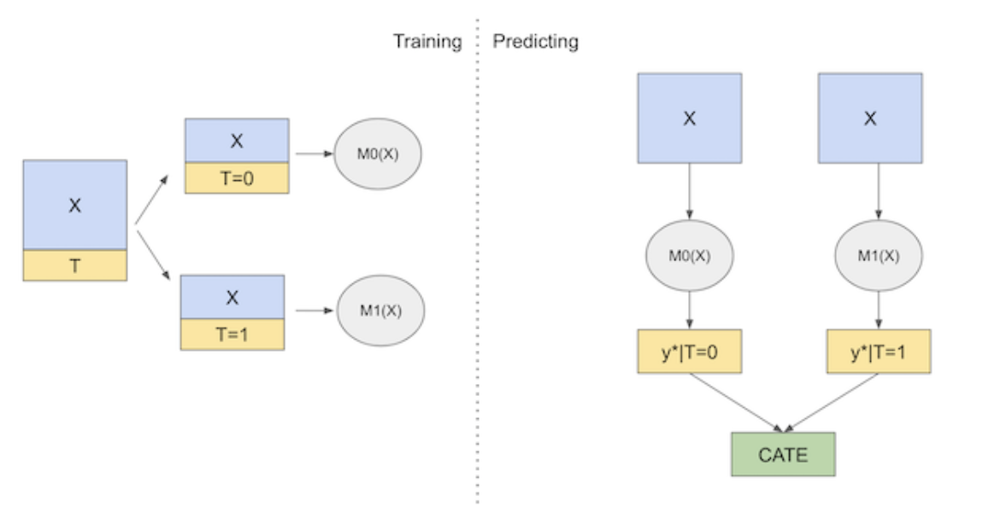
T : 이메일 발송 여부 mkt_email
Y : 한달 후 구매 금액 next_month_pv
1-1. T 러너#
통제, 처리 그룹을 각각 다른 모형으로 학습, 두 차이로 CATE를 추정
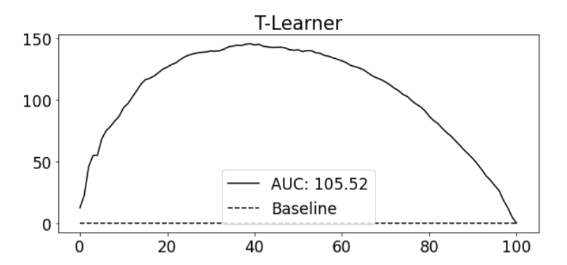
#. 추정 방법#
Step1 : 처치를 받지 않은 개체와 처리를 받은 개체를 각각 다른 모형을 사용해서 학습
Step2 : 이 두 그룹의 차이로 CATE를 추정
T 러너가 T = 0, T=1 에서 각자 머신러닝 모델을 학습
예측 시점에 두 모델을 모두 사용해서 실험군과 대조군 차이를 추정
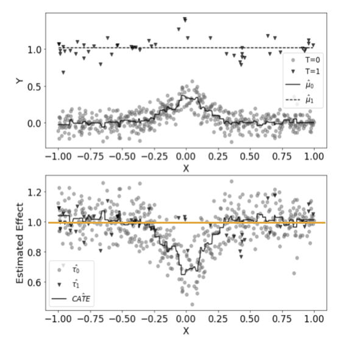
상대 누적 이득 곡선 AUC : 처치효과 높은 - 낮은 순서대로 올바르게 정렬했는 지를 확인
한계점 : 정규화 편향
대조군은 많고 실험군은 적은 상황
과적합을 피하기 위해 모델이 단순해질 수 있음
실제 해당 데이터 CATE = 1 이 나와야 함
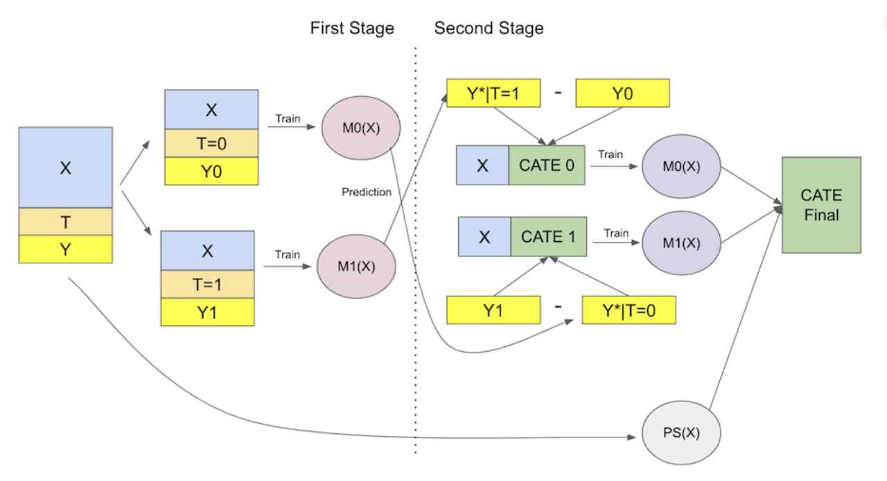
1-2. X 러너#
통제, 처리 그룹을 각각 다른 모형을 사용하여 학습하고, 해당 모형을 활용하여 각 그룹의 개별 처치 효과를 추정
개별 처지 효과에 가중치를 적용하여 최종 결과값 도출
두 집단의 데이터 양 차이가 많을 때 용이
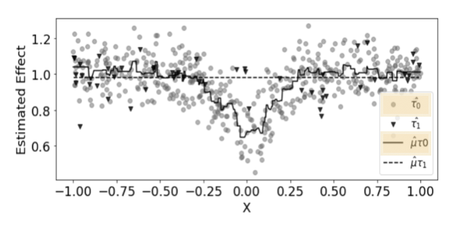
#. 추정 방법#
Step1 : 처치를 받지 않은 개체와 처리를 받은 개체를 각각 다른 모형을 사용해서 학습
Step2: 통제그룹, 처리 그룹의 개별 치료 효과 추정
통제 그룹의 개별 치료 효과 추정
\(μ_1(X,T=0)\)는 통제 그룹의 데이터 X를 사용하여 처리 그룹 모델 \(\hat{μ}_1\)이 예측한 결과입니다.
YT=0Y_{T=0}YT=0는 실제로 처리를 받지 않은 통제 그룹의 결과입니다.
이 차이는 “통제 그룹이 실제로는 처리를 받지 않았지만, 처리를 받았더라면 얻었을 결과”를 나타냅니다.
처리 그룹의 개별 치료 효과 추정
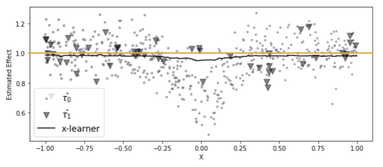
**** 매우 작은 표본에 적합된 \(\hat{μ}_1\)를 사용할 경우 위에 해당하는 결과값들이 잘못될 가능성이 큼
한 모델을 처치효과를 잘못 대체했기 떄문에 부정확하고
다른 하나의 모델은 그 값을 올바르게 대체했으므로 정확함
⇒ 두 모델을 정확한 모델에 더 많은 가중치를 부여하여 결합!
Step 3: 가중치 적용 및 최종 개별 치료 효과 추정
\(\hat{e}(x)\)는 성향 점수, 개체가 처리 그룹에 속할 확률을 나타냄
일반적으로 성향점수를 사용한 이 가중평균은 더 많은 데이터를 사용하여 학습된 \(\hatμ_t\)모델에서 얻은 처치효과 추정값에 더 많은 가중치는 부여
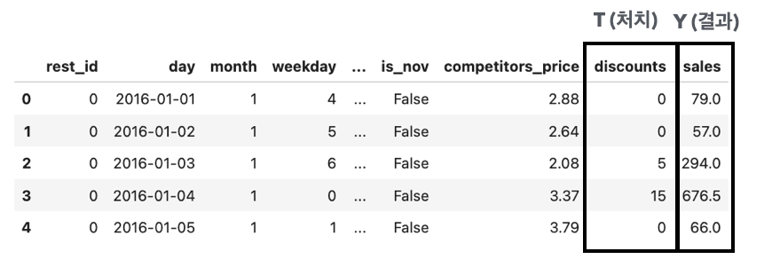
T러너에 비해 잘못 추정된 CATE를 보정하는 것에 더 좋은 성능
일반적으로 한 실험 대상의 집단이 다른 집단보다 훨씬 클 떄 X러너의 성능이 좋음
2. 연속형 처지 메타러너#
연속성 처치의 경우 메타러너를 적용하기 까다로울 수 있음
➡️ 가정
레스토랑 할인 정보 데이터
어느 시점에 할인을 제공하면 더 좋은 매출을 발생시키는 지 궁금
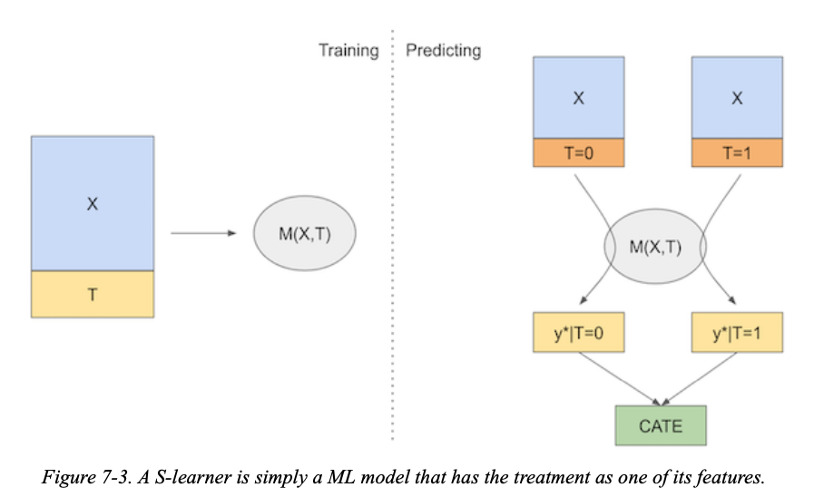
2-1. S 러너#
단일(Single) 머신 러닝 모델을 사용하여 결과를 예측
공변량 X와 처리 변수 T를 모두 모델의 특성으로 포함 → 이 방법은 반사실적 예측을 직접 출력하여 CATE 추정
이산형 처치에서도 사용가능
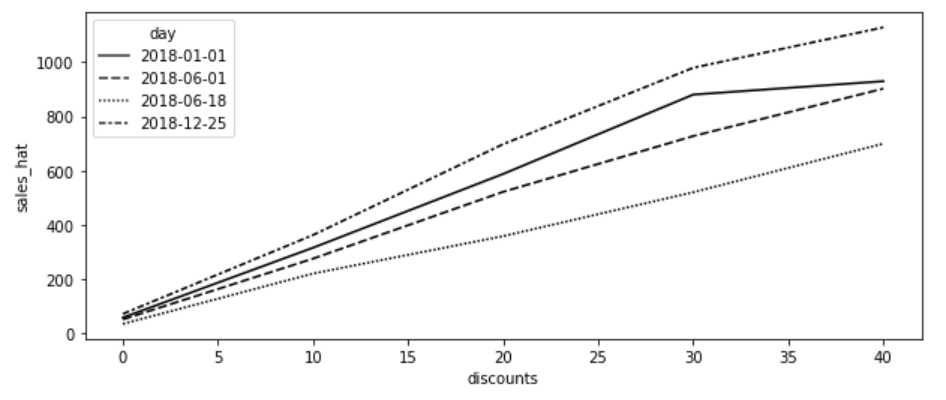
#. 추정 방법#
Step1 : 단일 머신 러닝 모델( \(μ_s\)) 을 X, T를 사용하여 학습
Step2: 반사실적 예측 (실제로 일어나지 않은 상황에서의 결과를 예측)
데이터 확장 : 연속성 처치의 경우 처치의 그리드 정의(해당 예제에서는 0~40% 이므로 10단위로 범주 주여)
\(μ_s\) 를 사용하여 확장된 데이터에서 반사실적 결과 예측
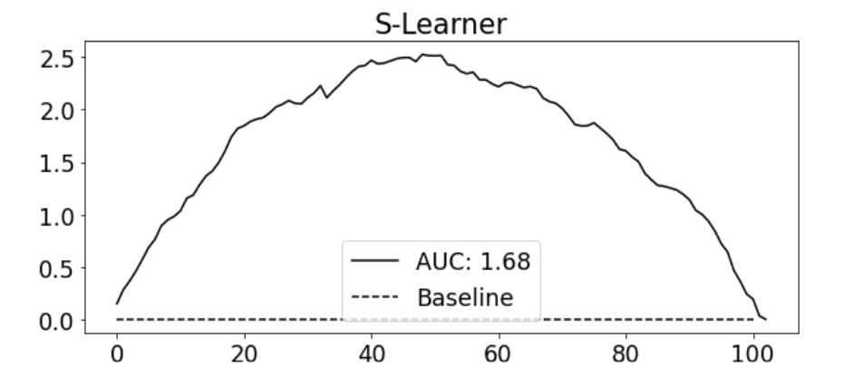
해당 그래프에서 2018-12-25에 추정된 반응 함수가 2018-06-18일보다 더 가파른 모습을 보여줌
→ 고객이 크리스마스에 할인에 더 민감함을 모델이 학습했다는 의미
Step3: CATE 추정
기울기 매개변수는 각 처지 값에 해당하는 결과의 변화율을 나타냄
이러한 기울기 매개변수의 차이를 통해 조건부 평균 치료 효과(CATE)를 추정
단순선형회귀 계수 공식 활용
\[ \hat{β} = Cov(t,y) / Var(t) \]
T=1 일 때 \(\hat{Y}_1 = \hat{β}_0 + \hat{β}_1⋅1 + \hat{β}_2X\)
T=0 일 때 \(\hat{Y}_0 = \hat{β}_0 + \hat{β}_1⋅0 + \hat{β}_2X\)
CATE 계산
\(CATE(X) = \hat{Y}_1 - \hat(Y)_0 = (\hat{β}_0 + \hat{β}_1⋅1 + \hat{β}_2X) - (\hat{β}_0 + \hat{β}_1⋅0 + \hat{β}_2X) = \hat{β}_1\)
한계점
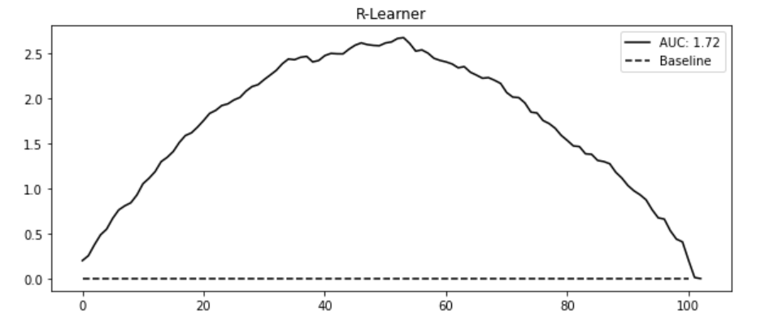
누적 이득 곡선에서 보면 S러너는 간단하지만 괜찮은 성능을 보여주는 것처럼 보임
S 러너는 랜덤화된 데이터가 많고 상대적으로 쉬운 데이터셋에 특화된 성능
큰 단점으로 처치효과를 0으로 편향시키려는 경향 존재
일반적으로 정규화 머신러닝 모델을 사용 → 정규화는 추정된 처치효과를 제한할 수 있음
처치변수가 다른 공변량보다 결과를 설명하는 데 영향력이 매우 적다면, S러너는 처치변수를 완전히 버릴 수 있음
이러한 ATE 편향문제를 해결하는 방법으로 이중/편향 제거 머신러닝 (R 러너)를 활용
2-2. 이중/편향 제거 머신러닝 (= R 러너)#
결과와 처치의 잔차를 구성할 때 머신러닝 모델을 사용
복잡한 함수 형태 포착 가능 → 과적합 가능성 있음
#. 주요개념#
결과 Y 추정 (머신러닝 회귀 모델 \({μ}_y\) 사용)
처치 T 추정 (머신러닝 회귀 모델 \({μ}_t\) 사용)
잔차 계산
결과 잔차 : \(\tilde{Y} = Y−μ_y(X)\)
처지 잔차 : \(\tilde{T} = T−μ_t(X)\)
결과의 잔차를 처치의 잔차에 회귀
\(\tilde{Y} = τ\tilde{T} + ϵ\)
τ : 추정하려고자 하는 처치 효과 : ATE에 해당
\[ ⁍ \]
문제점 : 과적합
→ k fold 교차 검증에서 잔차를 얻는 방법으로 해당 문제를 완화 시킬 수 있음
K-1 모델 추정, 남겨진 폴드에서 잔차를 얻음 * K번 반복
의도적으로 잔차를 0으로 만들지 않음
#. CATE 추정#
오차 관련 식으로 조정 → 인과 손실 함수
\[ ⁍ \]손실의 제곱을 최소화하면 원하는 CATE \(τ(X_i)\) 의 기댓값을 추정 가능
\[ τ(X_i) = \tilde{Y} /\tilde{T} + ϵ \]\[ \hat{L}_n(τ(x)) =1/n∑[(Y_i-\hat{M}_y(X_i)) - τ(X_i)(T_i-\hat{M}_t(X_i))] \]R러너가 최소하하려는 손실이므로 R 손실이라고도 부름
\[ ⁍ \]
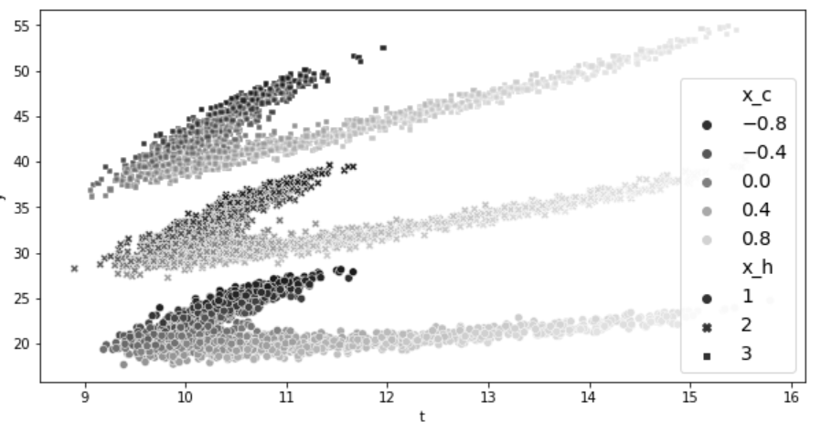
시각화
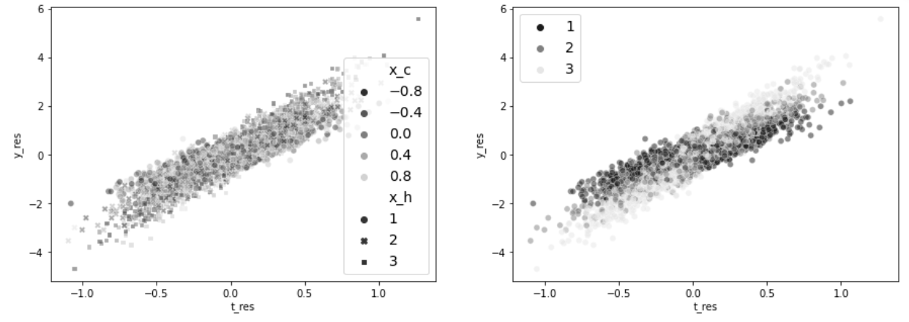
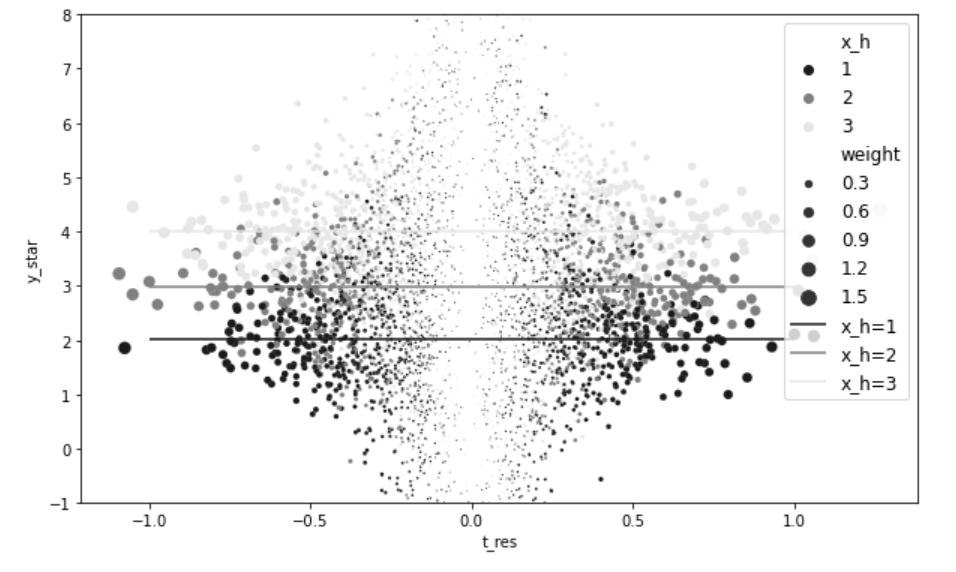

요약#
이산형
T-러너
두 개의 모델을 각각 학습하고 차이로 처리 효과를 추정
정규화 편향이 발생하기 쉬움
X-러너
두 개의 모델을 각각 학습
각 그룹의 개별 치료효과 추정 후 성향점수로 가중치 부여 (작은 표본 학습 모델의 의존도 낮추기 위함)
일반적으로 한 실험 대상의 집단이 다른 집단보다 훨씬 클 때 X러너의 성능이 좋음
연속형
S-러너
단일 모델 학습
처지값의 그리드를 주어 반사실 예측에 모델 사용
기울기 매개변수를 추정
이중 머신러닝
결과 모델, 처치 모델 추정
각각의 잔차 추정
과적합 해결 위해 k fold 교차 검증에서 잔차를 얻는 방법 사용